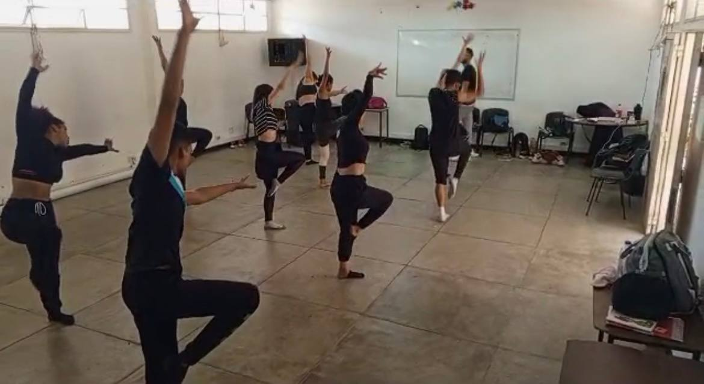

Encuentros Presenciales
Encuentro 1
Fecha üìÖ Martes 17/10/2023 Primer d√≠a de clases, pauta introductoria al semestre y a los montajes que se realizar√°n. ‚ÅÉ Se convers√≥ sobre varios temas, entre ellos: Montaje ECOS DEL PASADO - Ballet. Montaje ABYA YALA, M√©todo Laban, Vestuarios, tareas divididas por unidad curricular, grupo estable de danza contempor√°nea, trabajos individuales y grupales. ‚ÅÉ Organizaci√≥n y confirmaci√≥n de horarios y lugares de clase. ‚ÅÉ Tambi√©n se establecieron inquietudes de los profesores y de los alumnos, para una mejor√≠a del grupo, aprendizaje y rendimiento.
Encuentro 2
Fecha üìÖ Mi√©rcoles 25/10/2023 Segundo encuentro de clases, te√≥rica-pr√°ctica, e iniciaci√≥n al M√©todo Laban y la historia del Abya yala. Se realizaron actividades como: ‚ÅÉ Discusi√≥n socializada sobre el m√©todo laban, su concepto, el porqu√© es un m√©todo y no una t√©cnica y como podemos aplicarlo al montaje final. ‚ÅÉ Discusi√≥n socializada sobre el ABYA YALA, el t√©rmino, de donde proviene, sus significados, porqu√© es nuestro y c√≥mo vincularlo al montaje final. ‚ÅÉ Demostraci√≥n pr√°ctica de indicios b√°sicos del m√©todo laban a trav√©s de las 4 etapas del calentamiento. ‚ÅÉ Intro del montaje ABYA YALA, a trav√©s de las directrices dadas por el profesor sobre el m√©todo laban. ‚ÅÉ Presentaci√≥n de las piezas musicales que ser√°n utilizadas para realizar el montaje final.
Encuentro 3
Fecha üìÖ Mi√©rcoles 01/11/2023 Encuentro en el cual se desarroll√≥ la primera clase del cronograma de clases sobre el m√©todo laban, dictada por Jes√∫s Yemez. En esta se resaltaron aspectos como: Las 4 fases del calentamiento, combinado con las acciones del m√©todo laban, aparte de ello se realiz√≥ parte del montaje de Abya Yala, con las secuencias de 48 tiempos de Jos√© D√≠az, Yetsibel Alcal√°, In√©s S√°nchez, Junnialys Vel√°squez y Juan Arteaga, dando as√≠ inicio a la composici√≥n colectiva del montaje final para Ecos del Pasado Contempor√°neo.
Encuentro 4
Fecha üìÖ Jueves 11/01/2024 Tercer encuentro, y primer encuentro en el a√±o. En este encuentro se convers√≥ sobre el taller te√≥rico pr√°ctico Abya Yala, y sobre el montaje en el cual se empezaron a dividir responsabilidades para la creaci√≥n de las piezas. En este encuentro se cre√≥ uno de los actos en composici√≥n colectiva, en el cual participaron Mariangel Blanco, Carmen Aristimu√±o, Jes√∫s Yemez, Jos√© D√≠az, Franciannys Frontado y Rosangel Gonz√°lez.
Encuentro 5
Fecha üìÖ Jueves 25/01/2024 En este encuentro correspondi√≥ la realizaci√≥n de la clase de Carmen Aristimu√±o sobre el m√©todo laban, en la cual se tocaron temas como la kinesfera (planos y ejes del cuerpo) las 8 acciones del m√©todo y sus 7 aplicaciones en la danza. La clase se describi√≥ como muy buena y nutritiva.
Encuentro 6
Fecha üìÖ Jueves 01/02/2024 En este encuentro se habl√≥ un poco sobre el taller te√≥rico pr√°ctico y las asignaciones del seminario, el profesor asesor√≥ a los que presentaban dudas y se lleg√≥ a un acuerdo con respecto a una t√©cnica a utilizar en el maquillaje de Abya Yala conocida como la ‚ÄúMola‚Äù. Luego se realiz√≥ la clase pautada para ese d√≠a que fue dirigida por In√©s S√°nchez, la cual se bas√≥ m√°s que todo en las 4 fases del calentamiento, y en el desarrollo del m√©todo laban, sus 8 esfuerzos. Durante la clase el profesor hizo preguntas sobre la descripci√≥n de cada movimiento, de acuerdo a sus 7 aplicaciones en la danza y a los planos, ejes y direcciones.
Encuentro 7
Fecha üìÖ Jueves 15/02/2024 En este encuentro se habl√≥ sobre las asignaciones del seminario, se toc√≥ el tema del vestuario y las piezas culminadas hasta ahora. Luego se llev√≥ a cabo la clase de Dannibel Correa y Franciannys Frontado sobre el m√©todo laban, en la cual trabajaron ambas clases en conjunto. Luego se realiz√≥ parte del montaje con secuencias llevadas por ellas, se describieron los movimientos a realizar y se adapt√≥ junto con otra secuencia realizada la clase anterior. Al final se recordaron las piezas ya montadas.
Encuentro 8
Fecha üìÖ Jueves 22/02/2024 En este encuentro se habl√≥ sobre las asignaciones del seminario al ya ser el ultimo encuentro de clases del lapso. Se presentaron las propuestas de vestuario en proceso y se consignaron los avances de las asignaciones correspondientes. Se realizo la clase del Metodo Laban con las alumnas Keidy Garcia, Francisca Rodriguez, Romelys Gil, Yetsibel Alcala y Anaysa Sayago, la cual la dieron de una forma muy dinamica. Para finalizar con el montaje de la pieza de intro de ABYA YALA y el intro de la pieza moderna, y en ensayo de los cuadros ya terminados.